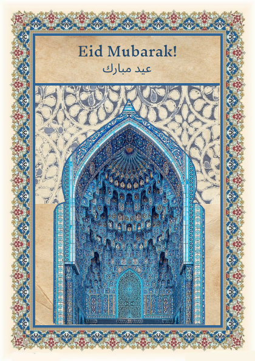
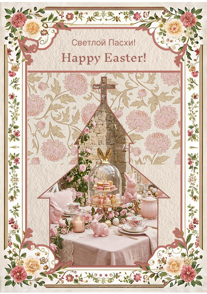
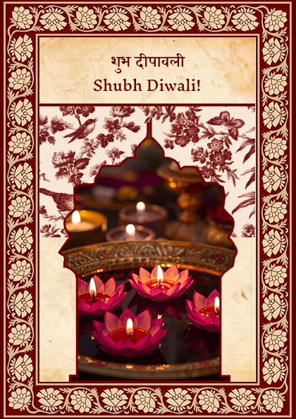
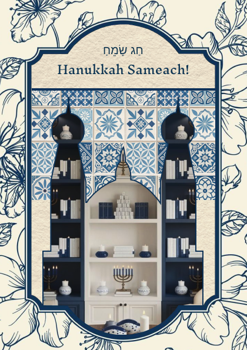
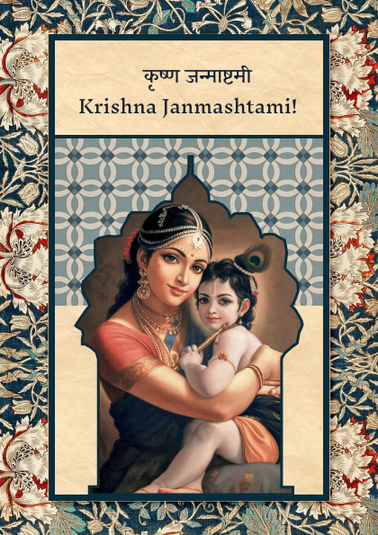

Задача
Создать серию праздничных открыток, объединённых общей визуальной стилистикой, для использования в личных и коммерческих поздравлениях. Требовалось охватить несколько культурных и религиозных праздников, сохранив уважение к традициям и эстетическую цельность.
Решение
Я разработала серию из пяти открыток, посвящённых Ид, Пасхе, Дивали, Хануке и Кришна-джанмаштами. Каждая открытка использует уникальные цветовую палитру и орнаменты, соответствующие культуре, но объединена общей композиционной схемой и типографикой, адаптированной под язык и традиции праздника.
Открытки

eid.png';">
easter.png';">
diwali.png';">
hanukkah.png';">
krishna.png';">Результат
Серия получила положительную обратную связь от коллег и представителей культурных сообществ. Работа была отмечена за внимательное отношение к культурным кодам и стилистическую цельность.
Единая композиционная схема и уважение к традициям позволили создать узнаваемую серию, которая работает на разных языках и для разных аудиторий.
Моя роль
Дизайнер Концепция Типографика Подготовка к печати